오늘 다룰 내용
컴공 → AI 부트캠프 → NCsoft (NLP → AI 서비스개발/금융 → 계정 플랫폼) → 모니모니
개발자는 기술의 변화를 제일 빠르게 받아들이는 직업
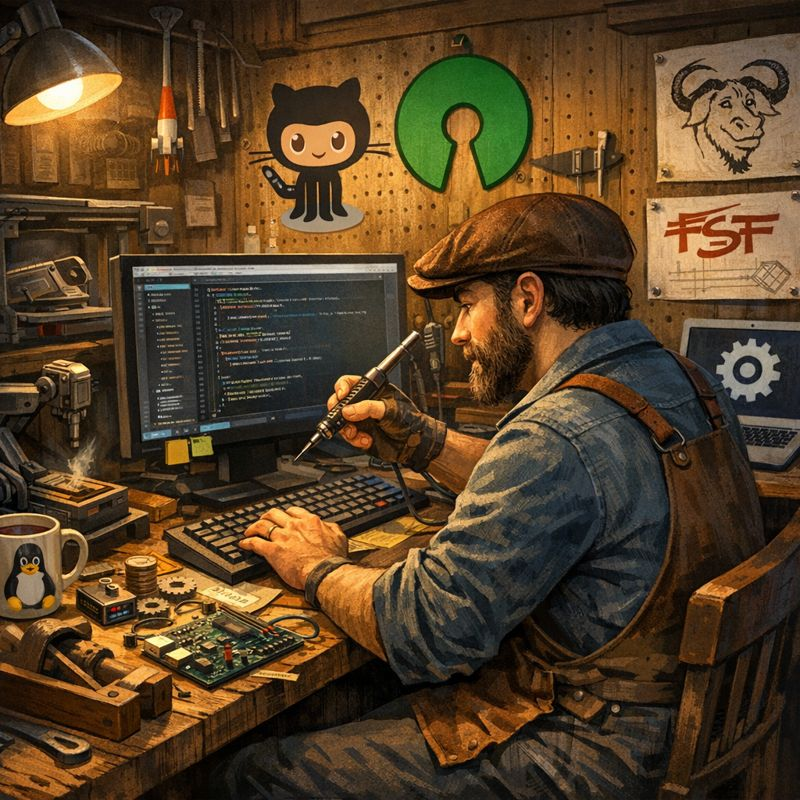
KnowHow → KnowWhere
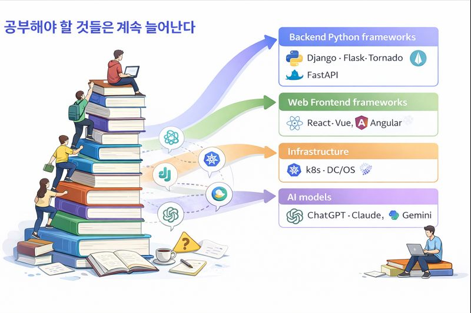
먼저 구조화, 다음에 단계별
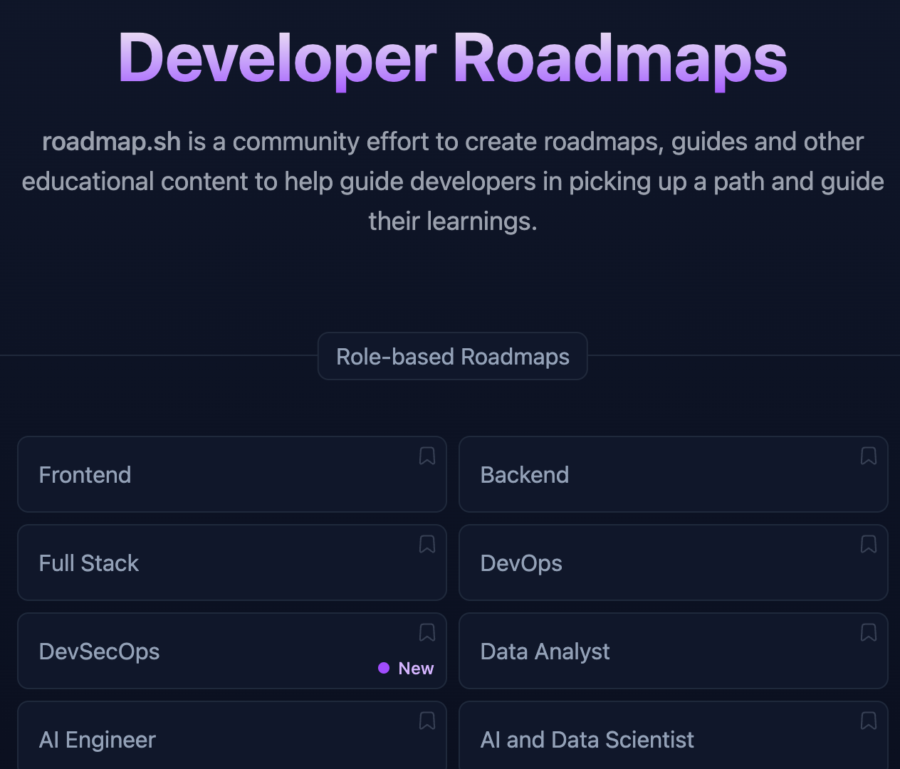
AI 코딩이 도입된 건 불과 반년
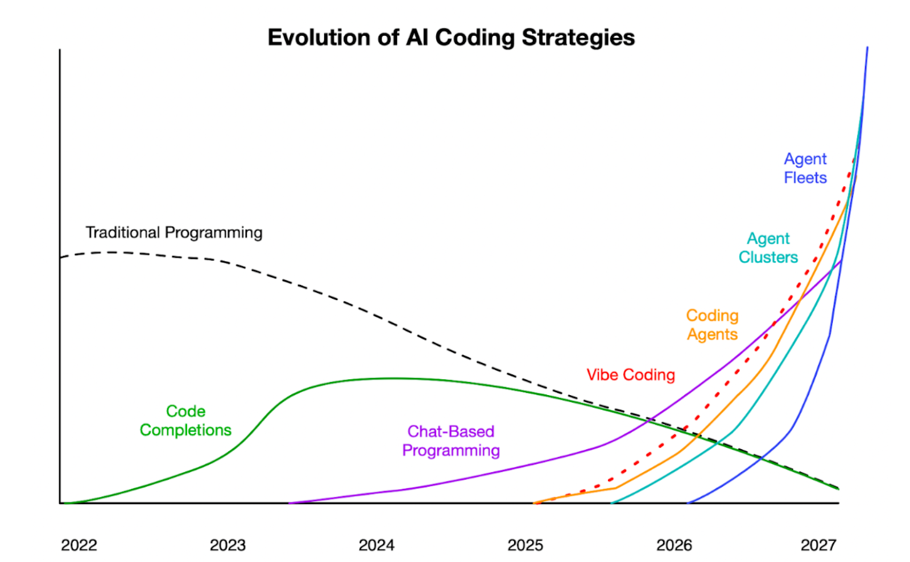
AI 에이전트와 AI 코딩 = 동료로서 AI
현재 주니어 개발자의 역할이 대체
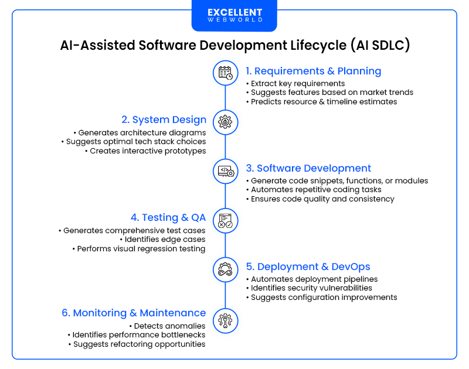
AI는 책임을 지지 않는다
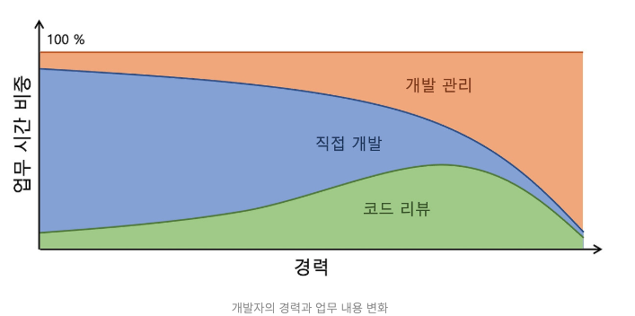
개발자들의 관점
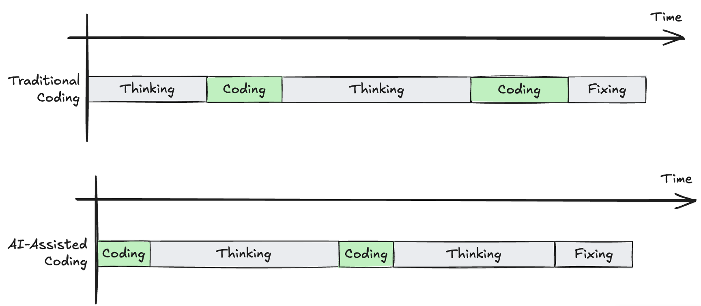
코드를 짜는 재미, 과정의 재미가 사라졌다
코드를 짜면서 생각하는 과정, 다른 레퍼런스들을 찾아보고 모르는 것들은 검색하고 공부하며 알아가던 과정이 사라지고, 모든 게 프롬프트+검수 정도로만 이뤄지니 너무 재미가 없네요. — zero cho
그런데 진짜 그런 엄청난 세상이 와버렸습니다. 회사에서 여러 사람들이 모여 매일 야근하고 한땀한땀 코딩하던 시절이 진짜 있었나? 바로 몇 년 전 일인데 90년대 이야기 아닌가 싶을 정도로 아득하게 느껴집니다. — k리그개발자
개발 전 과정을 개발자가 컨트롤 할 수 있게 되었다
웹 개발이 다시 재밌어지다
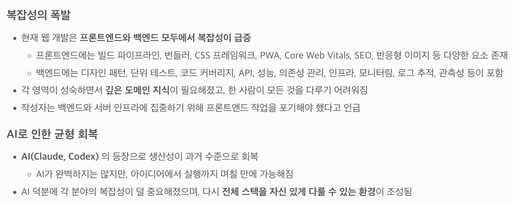
어떤 관점과 목표를 위해 도입하고 있나?
시니어는 뚝딱 만들어지지 않는다
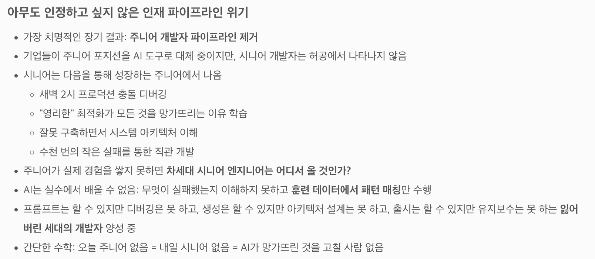
붕괴되는 오픈소스 수익 파이프라인
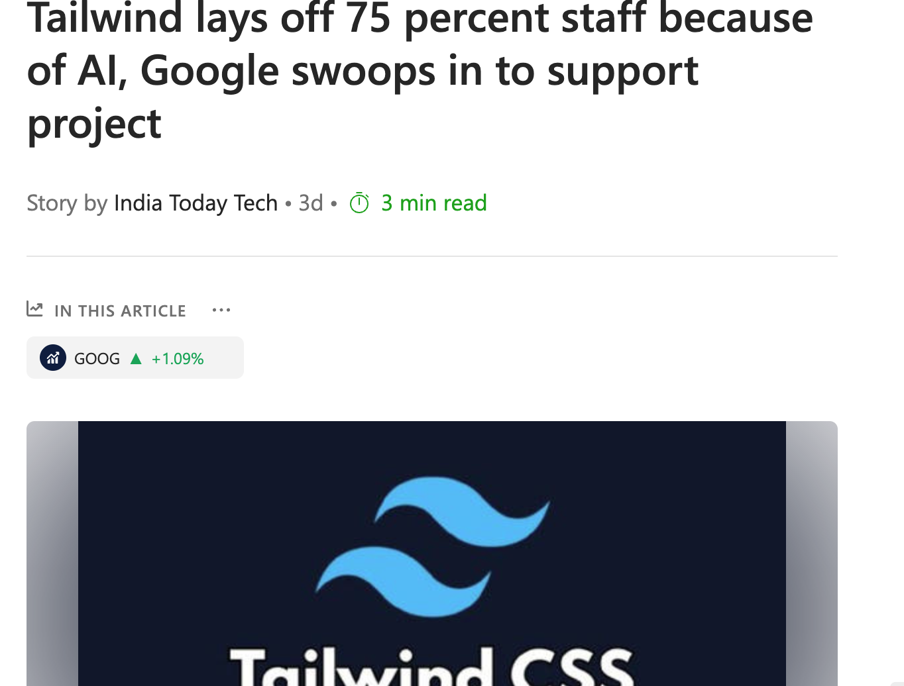
어두운 길에 네비게이션을 찍고 도착을 기대
개발자는 성향이 맞아야 한다
오픈소스 + AI 를 통한 분석
무엇을 공부해야 하나?
공고 한 장에서 뽑아낼 수 있는 공부 키워드
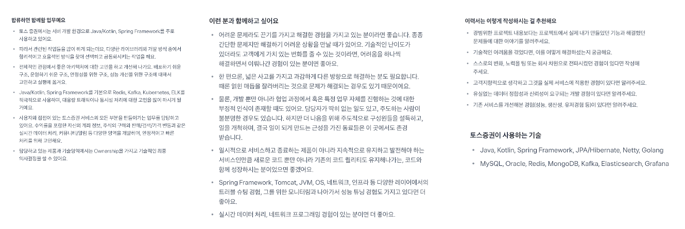
회사의 채용 프로세스와 회사에 가기 위한 준비 / 키워드 / 실력
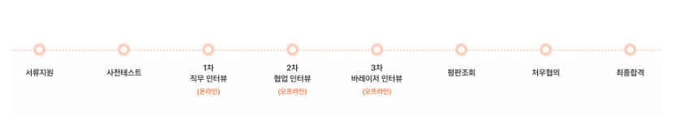
난 뭐했지? 왜 이렇게 부족해 보이지? — 자괴감과의 싸움
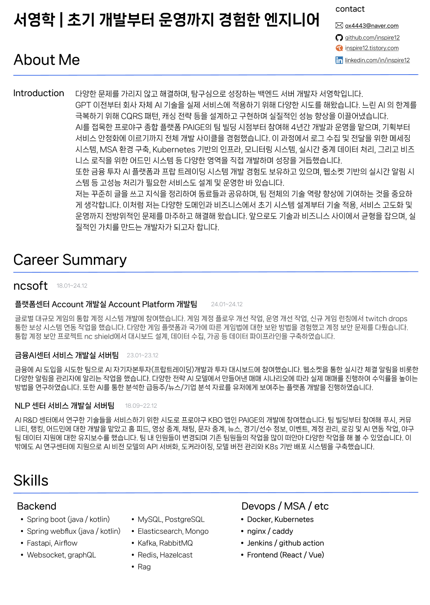
ex) 개발자 이력서
현장에서의 고민 — 변별력
아직 대세는 아니지만, 충분히 변별력이 생길 만한 과정
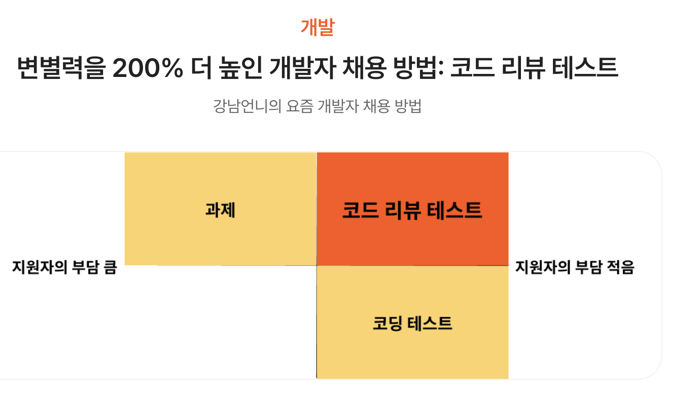
연습이 필요하다
개발자로 성장할 수 있는 환경
레벨을 나눠 생각하자
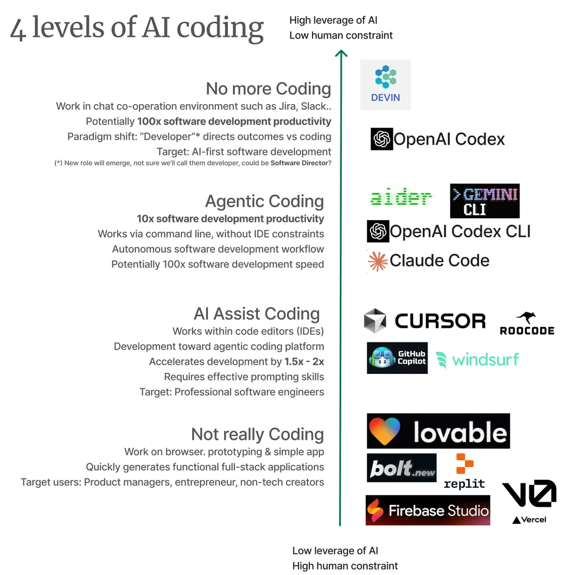
지시가 아니라 컨텍스트를 준다
껍질은 AI, 뼈대는 사람
AI를 일상 학습에 끼워 넣자
코딩은 정말 쓸데없나?
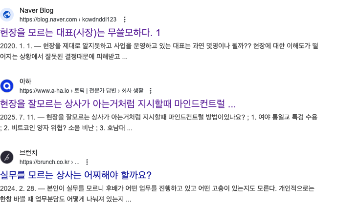